リスナー支援ツール
クソマロカレンダーアプリ
あまりにもシンプル過ぎるクソマロカレンダーアプリを作成しました。
到底正気の沙汰ではございませんが、クソマロを愛でるためのアプリです。
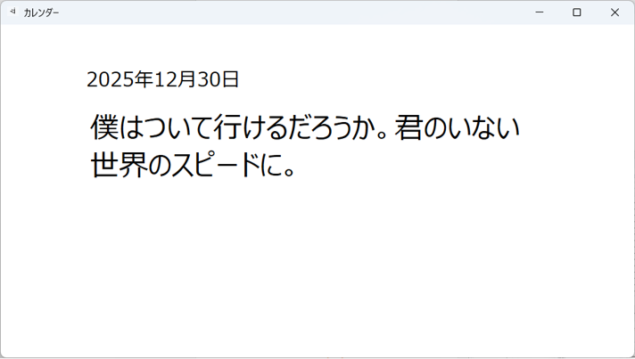
利用方法
- ダウンロード
- 下の「カレンダー.zip」をクリックし、zipファイルをダウンロード。
- zipファイルの解凍
- ファイルを解凍（解凍先はCドライブ、DドライブどちらでもOK）。
- Calendar.exeの起動
- フォルダ内にあるCalendar.exeをクリック。
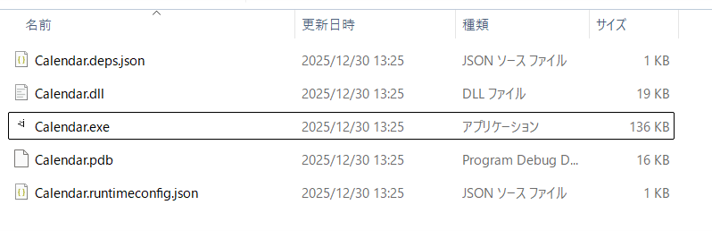 - クソマロ新規登録
- 初期画面の「はい」をクリック。
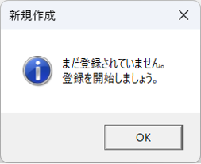
通常画面から登録する場合は画面を右クリックし、「登録・編集」をクリック。
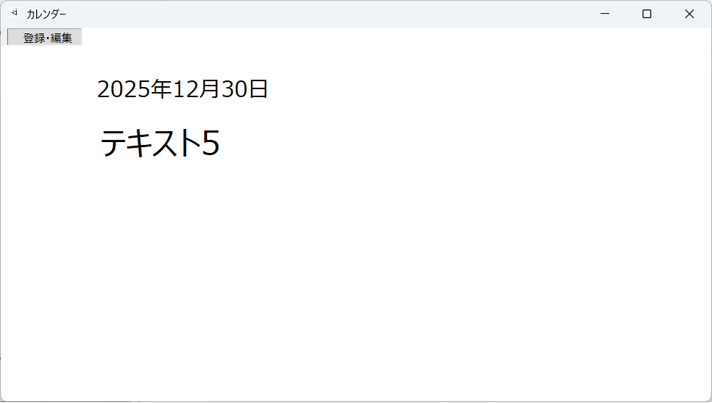
画面に沿って編集を行い、「登録」ボタンをクリックで登録完了。
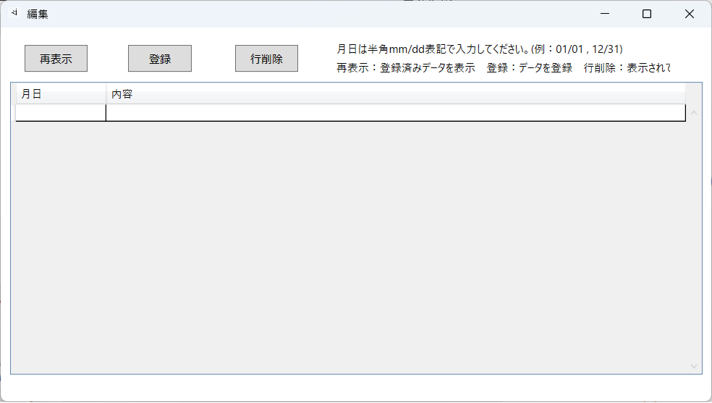
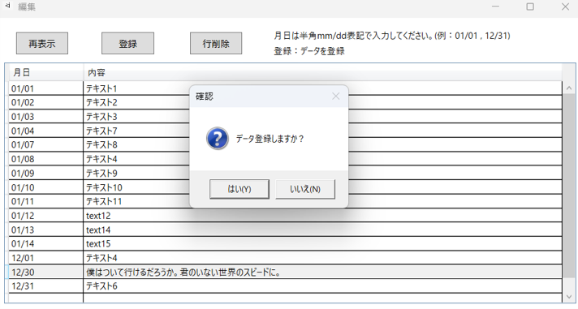
登録内容はC:\CalendarApp\ProvDic.logに保存されます。
アプリを終了しても内容は保存されます。 - 表示/利用
- 当日のクソマロが自動表示されます。
登録されていない場合は未登録のメッセージが表示されます。
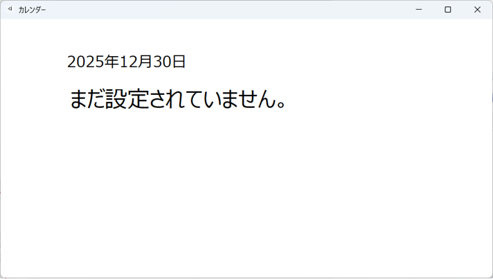
大変意味が分かりません。
GoogleChrome拡張機能 弾幕/拍手入力
GoogleChrome拡張機能を使って、YouTube配信で手軽に弾幕を入力できるツールを開発しました。
一度弾幕を登録するだけで弾幕を連続して入力できますので、何度も入力する手間が省けます。
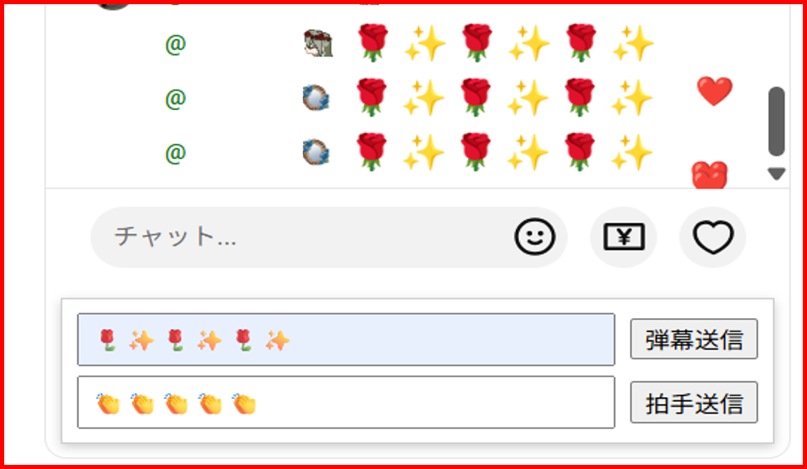
機能紹介
- 弾幕
- 任意の絵文字/テキストを入力できます。入力内容は都度変更可能です。デフォルトでは空欄になっています。
- 拍手
- デフォルトで拍手の絵文字が入力されています。入力内容は変更可能です。
- 弾幕入力/拍手入力
- 登録されたテキストをチャット欄へ自動入力します。送信ボタンを押すか、Enterを押すことで、入力内容を送信できます。
- その他
- メンバーシップスタンプでなければ、様々な弾幕を入力できます。歌枠リレーで配信ごとに弾幕を変えて利用できます。
利用上の注意点
- 利用責任
- 当拡張機能は配信者の求める弾幕/拍手などに応えるために作成されたツールです。
トラブルを生じた場合、一切責任を負いかねますので、当該目的以外での利用はしないでください。 - 入力内容の制限
- メンバーシップのスタンプは入力できません。
- サポート
- 拡張機能はバージョン情報を自動サポートされていません。YouTubeやChromeの仕様変更により動作しなくなる場合があります。
バージョン変更があった場合は、当ページにて都度お知らせします。 - 動作環境
- Chromeの拡張機能はPCのみ利用可能です。Android並びにiOSではサポートされていません。
- 確認済み実行環境
- GoogleChrome バージョン 142.0.7444.60（Official Build）（64 ビット）
利用方法
- ダウンロード
- 下の「拡張機能.zip」をクリックし、zipファイルをダウンロード。
- zipファイルの解凍
- ファイルを解凍（解凍先はCドライブ、DドライブどちらでもOK）。
- Chrome起動
- GoogleChromeを起動し、右上の「設定（三点ボタン）」→「拡張機能」→「拡張機能を管理」をクリック。

- 拡張機能登録
- 左上にある「パッケージ化されていない拡張機能を読み込む」をクリック後、
解凍したフォルダを選択し、「フォルダーの選択」をクリックで登録完了。
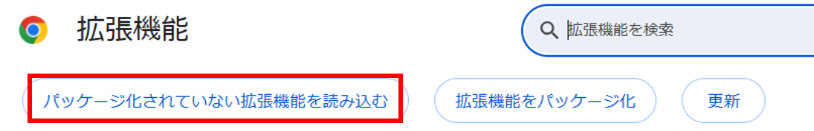
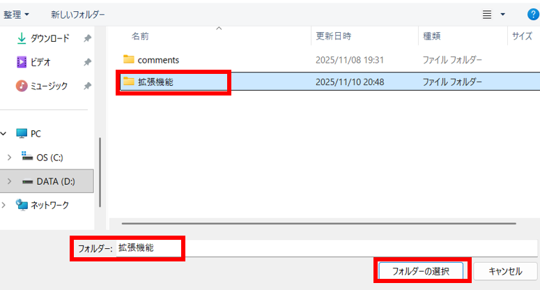
登録が成功すると、拡張機能の一覧に今回作成した「Comments_Supports」という拡張機能が追加されます。
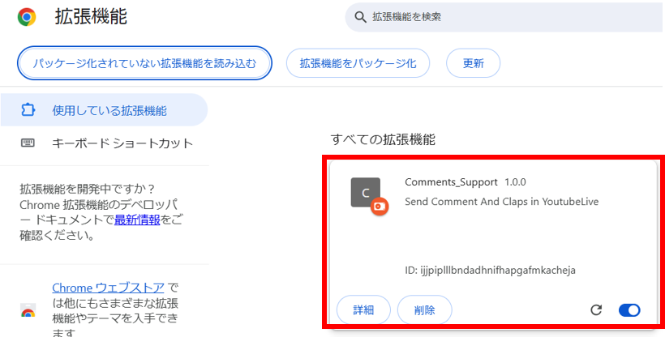 - 表示/利用
- YouTubeの配信ページに移動で自動表示される。
自動表示されない場合は、右上の拡張機能アイコンをクリックすることで表示される。
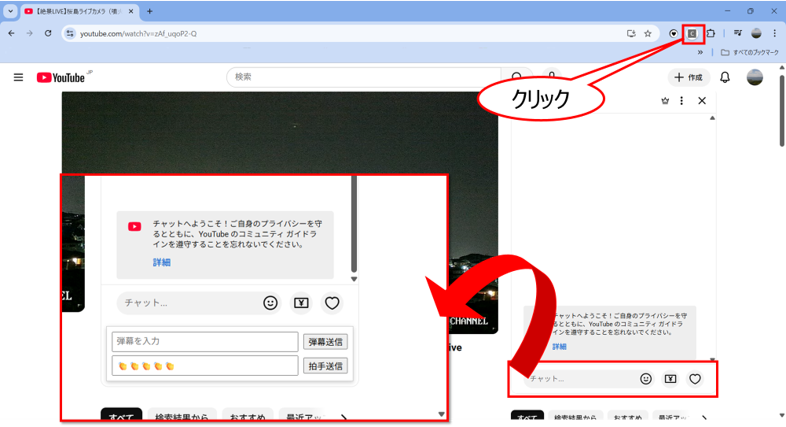 - その他
- 拡張機能のアイコンを右クリック→「サイトデータの読み取りと変更」をクリックすると、拡張機能の表示条件を選択できます。
配信画面で常に表示させたい場合はYouTube.comを選択することで、アイコンをクリックしなくても表示できるようになります。
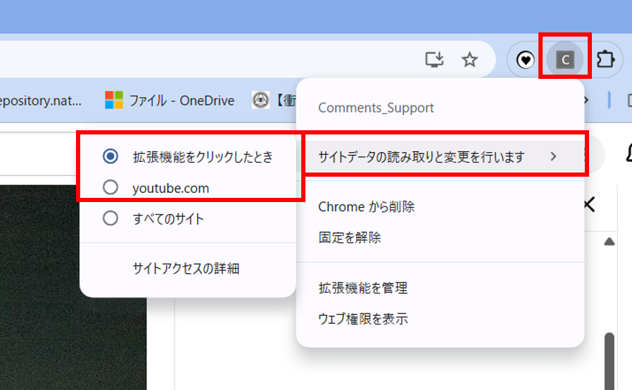
バージョン情報
- 2025/11/10 バージョン1.0.0